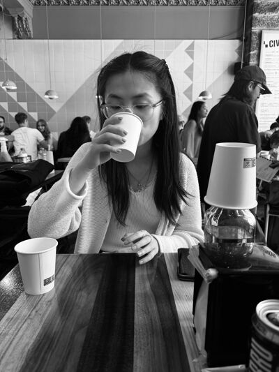
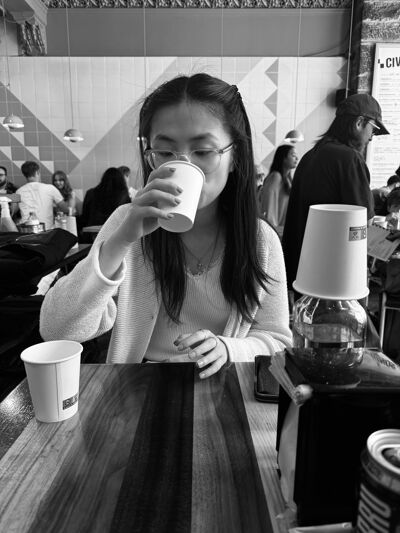

...
your eye in the sky
new cities can be scary
“is that area okay to walk through?”
— academic wanderer
— city wanderer
“are there any parts i should stay away from?”
wandr
explore cities confidently with
 

meet our team
Interactive Map: Allows users to zoom in and out, and click on specific areas for detailed crime statistics.
Color-Coded Zones: Displays areas with varying levels of danger using a color-coded system (e.g., green for safe, yellow for caution, red for high danger).
Crime Data Integration: Utilizes real-time crime data from local law enforcement and public safety agencies.